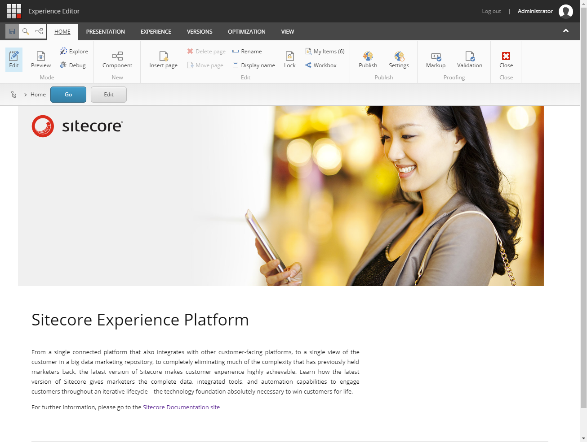
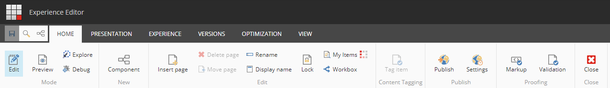
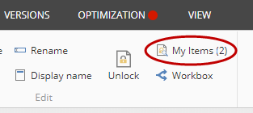

エクスペリエンス エディター¶
エクスペリエンスエディタはWYSIWYG（What You See Is What You Get）エディタで、ページ上のアイテムを直接簡単に変更することができます。テキスト、グラフィック、ロゴ、リンクなど、ページ上に表示されているすべてのアイテムを編集することができます。
エクスペリエンス エディタでは、現在のアイテムのフィールドとページに表示されているアイテムのフィールドを編集することができます。例えば、ページ上のメニューが製品アイテムのタイトルで構成されている場合、製品アイテム自体に移動することなくタイトルを編集することができます。
{kind=link}
エクスペリエンス エディタのリボン¶
エクスペリエンス エディターでは、ウェブページの上部に利用可能な機能がすべて表示されたリボンが表示されます。リボンに表示される機能は、お客様のセキュリティロールやアクセスしているWebサイトのカスタマイズ内容によって異なります。
エクスペリエンス エディタのすべての機能にフルアクセスできる場合は、リボン上のすべてのタブにアクセスできます。
{kind=link}
最低限、ウェブサイト上でページの挿入やページの削除ができるようになることが期待できます。使用しているリボンに関わらず、左上には必ず保存ボタンがあります。
アイテムを編集するときは、[リボンを隠す] をクリックすると、リボンを一時的に隠して作業スペースを確保できます。リボンを表示 をクリックすると、リボンが表示されます。
エクスペリエンス エディターでビューをカスタマイズする¶
適切なアクセス権を持っている場合は、エクスペリエンス エディターで編集可能な項目の表示方法を変更することができます。
リボンの [表示] タブで、エクスペリエンス エディタを設定できます。
編集可能なテキストフィールドを表示するには、[編集] チェックボックスを選択します。エクスペリエンス エディタのフィールドの上にマウスを移動すると、テキスト フィールドが点線のアウトラインで表示されます。
レンダリングとプレースホルダを表示するには、[デザイン] チェックボックスを選択します。エクスペリエンス エディターのフィールドの上にマウスを移動すると、レンダリングとプレースホルダが点線のアウトラインで表示されます。
ページ上のすべてのオブジェクトのアウトラインを表示するには、[コントロール] チェックボックスを選択します。この機能を使用して、ページがどのように構成されているかを理解することができます。このチェック ボックスは、[デザイン] または [編集] チェック ボックスが選択されている場合にのみ有効です。
関連するコンテンツを含むページ上のすべてのコンポーネントのアウトラインを緑の点線で表示するには、[ 関連するコンテンツ] チェック ボックスを選択します。
リボンのロード時間の改善¶
適切なアクセス権を持っている場合は、ロックしたアイテムの数を表示するリクエストをオフにすると、エクスペリエンス エディターリボンの読み込みにかかる時間を改善することができます。
リボンのロード時間を改善するために
Website\App_Config\Sitecore\エクスペリエンス エディター フォルダ内の Sitecore.ExperienceEditor.config ファイルを開きます。WebEdit.ShowNumberOfLockedItemsOnButton の設定をfalseに変更します。
ちなみに
英語版 https://doc.sitecore.com/users/93/sitecore-experience-platform/en/the-experience-editor.html